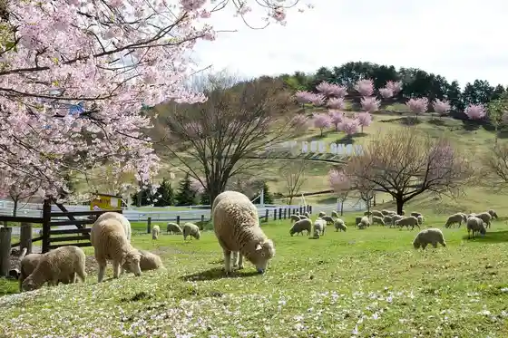
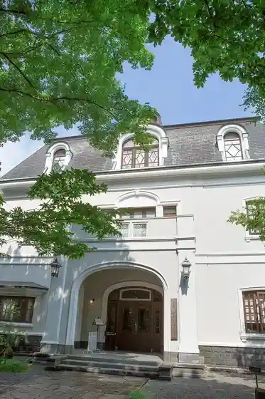
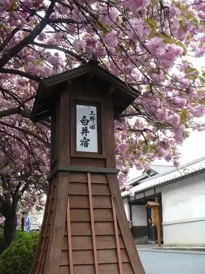
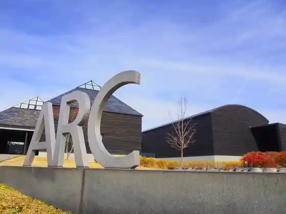

Akagi Shizen Sono
Shibukawa, Gunma · 0279-56-5211 · Official / source link
Ikaho Guriin Ranch
Shibukawa, Gunma · 0279-24-5335 · Official / source link

Takehisayumeji Ikaho Memorial Museum
Shibukawa, Gunma · 0279-72-4788 · Official / source link

Shirai Yado Yaezakura
Shibukawa, Gunma · 0279-22-2111 · Official / source link

Arutenado
Shibukawa, Gunma · 0279-72-3151 · Official / source link

Kajika Hashi
Shibukawa, Gunma · 0279-72-3151 · Official / source link
Rokka Yama Workshop / Garasu Workshop
Shibukawa, Gunma · 070-7462-3179 · Official / source link
Gunma Garasu Kogei Art Museum
Shibukawa, Gunma · 0279-20-1101 · Official / source link
Akagi Ringo Kumiai
Shibukawa, Gunma · Official / source link
Komochi Ringo Kumiai
Shibukawa, Gunma · Official / source link
Shibukawa Orchard Gei Kumiai
Shibukawa, Gunma · Official / source link
Komochi Kanko Ichigo Sono
Shibukawa, Gunma · 0279-53-5519 · Official / source link
Kanto no Hana (Hijiri Shuzo (Kabu))
Shibukawa, Gunma · 0279-52-3911 · Official / source link
Shibukawa General Park
Shibukawa, Gunma · 0279-24-0535 · Official / source link
Saku Hatsudensho
Shibukawa, Gunma · 0279-22-2873 · Official / source link
Robai no Sato Komochi
Shibukawa, Gunma · 0279-22-2073 · Official / source link
Sei Hasu Tera (Botan)
Shibukawa, Gunma · 0279-22-0838 · Official / source link
Gyoko Ta Nambara Chiku Soba Hatake
Shibukawa, Gunma · 0279-22-2111 · Official / source link
Tsutsujiga Oka (Ikaho Forest Park)
Shibukawa, Gunma · 0279-72-5210 · Official / source link
Nagamine Park
Shibukawa, Gunma · 0279-22-2873 · Official / source link
Shibukawa General Park (Ajisai)
Shibukawa, Gunma · 0279-24-0535 · Official / source link
Shibukawa Sukai Land Park
Shibukawa, Gunma · 0279-20-1589 · Official / source link
Ono Ike Ajisai Park
Shibukawa, Gunma · 0279-22-2111 · Official / source link
Mizusawa Kanzeon
Shibukawa, Gunma · 0279-72-3619 · Official / source link
Hara Art Museum ARC
Shibukawa, Gunma · 0279-24-6585 · Official / source link
Roadside Station O no Ko
Shibukawa, Gunma · 0279-59-2839 · Official / source link
Roadside Station Komochi
Shibukawa, Gunma · 0279-60-6600 · Official / source link
Nippon Shanson Kan
Shibukawa, Gunma · 0279-24-8686 · Official / source link
Ikaho Onsen
Shibukawa, Gunma · 0279-72-3151 · Official / source link
Ikaho Forest Park
Shibukawa, Gunma · 0279-72-5210 · Official / source link
Onogami Onsen
Shibukawa, Gunma · 0279-22-2111 · Official / source link
Kitatachibana Onsen
Shibukawa, Gunma · 0279-20-4126 · Official / source link
(Ari) Men Ho Waku Tama
Shibukawa, Gunma · 0279-56-8885 · Official / source link
Kemuriya
Shibukawa, Gunma · 0279-22-1602 · Official / source link
Kokyu Ie
Shibukawa, Gunma · 0279-72-3322 · Official / source link
Haruna Tei
Shibukawa, Gunma · 0279-23-4217 · Official / source link
Shirai Yado (Yaezakura)
Shibukawa, Gunma · Official / source link
Ikahonsen Rentasaikuru (IKALIN) (Ikaho-Trip-Cycling)
Shibukawa, Gunma · 0279-72-3151 · Official / source link
Shibukawa Sukai Land Park Amusement Park
Shibukawa, Gunma · 0279-20-1589 · Official / source link
Ikaho Ishidan Machi
Shibukawa, Gunma · Official / source link